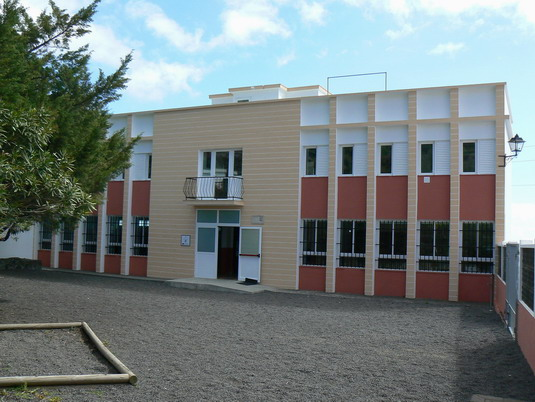

INSTITUTO I.E.S GACHONES
El I.E.S. Gachones tiene como objetivo conseguir una enseñanza rigurosa y de calidad y una educación en valores tanto en la Educación Secundaria Obligatoria como en el Bachillerato.
El I.E.S Gachones es un centro bilingüe.
Con este nuevo portal pretendemos mantener una vía de comunicación del Centro Escolar con las familias, aún en el tiempo en que la incorporación masiva de las tecnologías de la información y la comunicación a la vida escolar están abriendo nuevos cauces para esa comunicación.La razón de ser de un centro educativo y el objetivo primordial que marca el quehacer diario de cuantos trabajamos en él es formar a nuestros jóvenes proporcionándoles la educación y los conocimientos que hagan de ellos mejores personas y más capaces para desenvolverse con éxito en un mundo sumamente complejo, como lo es el que le ha tocado vivir a nuestra generación. En esta labor tan importante, tan delicada y tan crucial resulta imprescindible la colaboración de todos los intervienen en el proceso. Por ello les pedimos amablemente su implicación activa. El apoyo y respaldo continuo entre padres y profesores es un elemento imprescindible para lograr el objetivo y la mejor garantía de que la labor de unos y otros va dejando una huella firme y positiva en nuestro alumnado, sus hijos e hijas.